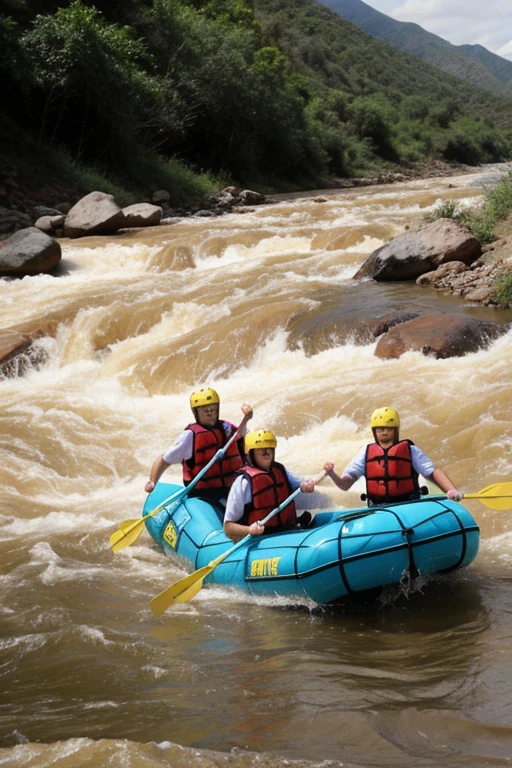

Haga que su corazón se acelere y vea más de la belleza natural de Costa Rica en esta actividad de rafting en aguas bravas desde La Fortuna Navegue en balsa por los rapidos de clase 4, tome un descanso a mitad de camino para tomar un refrigerio y admirarel paisage del bosque circundante. Termine con un gran almuerzo y bebidas costarricenses parareconpensar sus esfuerzos. Esta actividad requiere un nivel moderado de condicion fisica.

Rafting en aguas bravas en Costa Rica con guias.